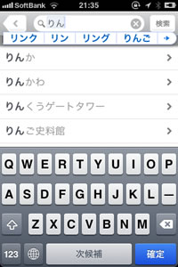

■ 『英辞郎 on the WEB for iPhone』には「キーワード入力補助」という検索を補助する機能があります。
キーワード入力補助とは、
……といったメリットのあるユーザインターフェイスです。
キーワード入力補助を有効にすると、検索キーワード入力欄に 1
文字ずつ入力するたびに、その文字列で始まる項目見出しが絞り込まれながら表示されていきます。
⇒キーワード入力補助は、「設定など」にてオン・オフの設定ができます。
検索キーワード入力欄に apple と入力したときの結果が下の図です。
apple を先頭に、Apple、apple allergy、apple blight、apple blossom ……と、検索キーワードのapple で始まる（前方一致する）項目見出しを『英辞郎 on
the WEB for iPhone』の英和データから逐次検索し、検索キーワード入力欄の下に表示します。ここには、最大で 20
件の項目見出しを表示します。
● また、キーワード入力補助は、英語の検索キーワードだけでなく、日本語の検索キーワードでも有効です。

上の図をご参照いただければわかるとおり、検索キーワードが未確定のひらがなの状態（りん）のときにも「りん」で始まる項目見出しをリストアップします。また、このキーワードが、「リン」や「林」に変換されたときにも、逐次「リン」で始まる項目見出し、「林」で始まる項目見出しをリストアップします。もちろん、カナ漢字変換確定後にも、検索キーワード入力欄に入力されたキーワードに前方一致する項目見出し一覧を表示します。